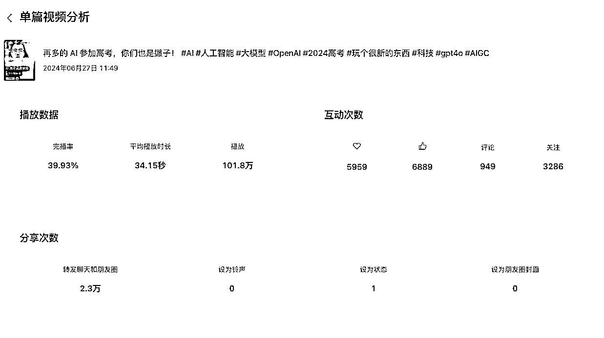
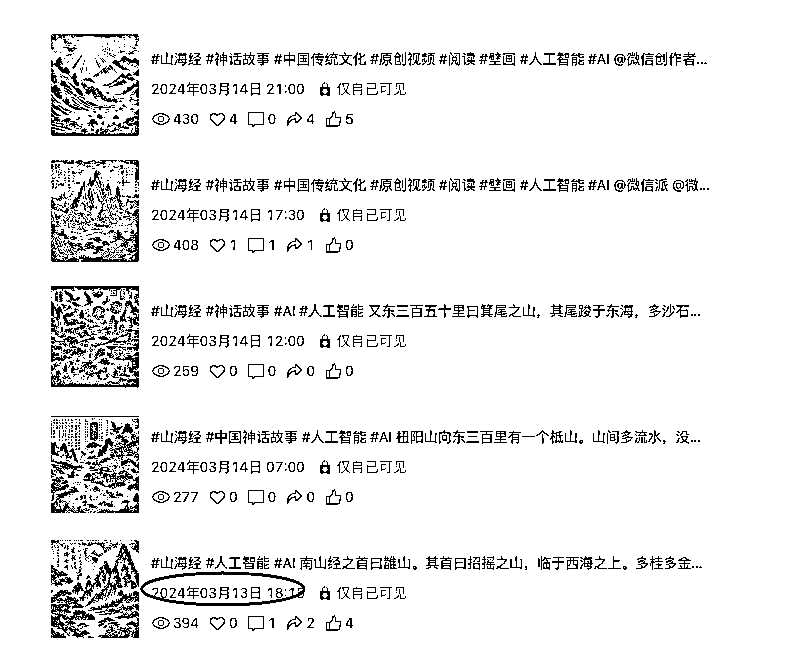
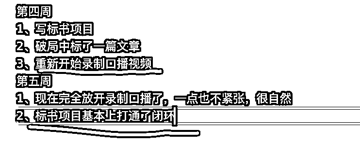
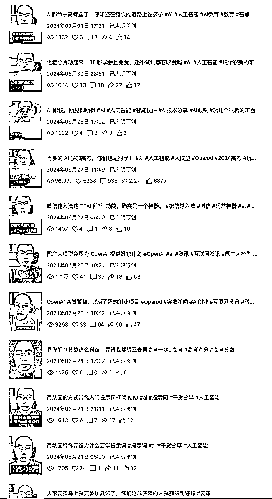
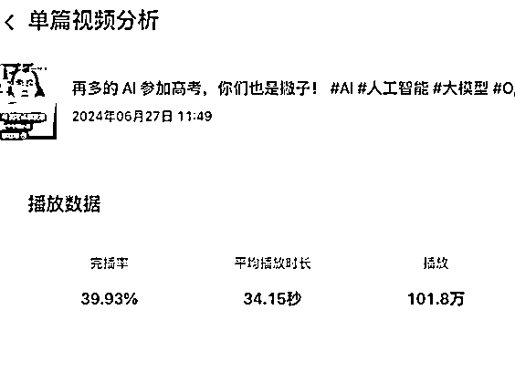
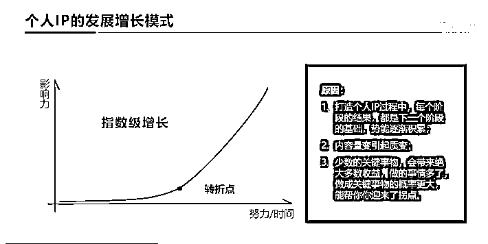

来源：https://j0qv6ahyv43.feishu.cn/docx/N0U2dR4YWogFltxZY7rcULfqnYd
大家好，我是白猫队长，黑猫警长的哥哥，前大厂资深架构师，AI 狂热者，编号前 4k 的生财会员，龙珠拥有者。
对于我这种秃头憨憨程序员，居然敢真人口播出镜做视频号，这是我以前从来没有想过的事情。
先说成绩，一个月从 0 到 1 做到了单条视频百万播放，累计变现 5 位数。

今年 1 月份告别职场，选择all in ai。对，我当时有多疯狂，现在压力就有多大。
按理来说对于我这种资深的程序员应该选择做一些编码的项目，也确实这些我也在做，但是这些在我心中就是一个赚取生活费的方式罢了，心中永远向往着做一种 IP 出来。
说说我都干了些啥吧：AI 绘画、AI 提示词、AI 视频制作、AI 公众号，市面上的这些航海我都尝试过。但，心中始终有一个灯塔告诉我自己，这些都不属于我。
我是一个适合做 IP 的人。
听说今年视频号很火 ，二话不说先从这个平台入手。
最开始哪里敢真人出镜，我就用所学的 AI 工具制作一些绘图，然后制作成视频。

这是我的第一个视频，3 月中旬开始的。
刚开始也是一直断断续续，真正的完全开始是 6 月中旬。

对于我这种秃头憨憨程序员，居然敢真人口播出镜做视频号，这是我以前从来没有想过的事情。
请你每一次都要记录自己的进步，然后回头在去看，发现其实自己走了很远。
这我做起来很简单，要暴力一点，当成一件事情，我现在就把每天发一个视频当成吃药，每天都要提醒自己，今天吃药了吗。
看的是你们，不是我自己，不好看现碍着的是你们的眼。我就是抱着这种厚脸皮的心态来进行坚持的。

反正不管拉不拉跨，先出一个再说。
6 月底意外发生了。

单篇播放量破 100w 了，而且由于我的真人出镜，我去参加活动的时候，好多人说 看过我的视频。你以为没有人看，没有人反馈，其实别人看了只是刷走了没有给你点赞罢了。但是总有那么一天，正反馈会哗哗哗一下子来的。
所以一定要坚持再坚持，要等到这个反馈的转折点。
下面这张图是引用的三节课，版权归三节课所有：

其实不要考虑很多套路，当你还没有真正的能做到量产，没有做到能自然表达的时候，不要考虑很多。
就一个点记住：我的受众是哪些人，我能这条视频能帮助到他们吗。
每一个视频都这样想，然后在坚持每天一个输出。
很多人就会觉得 ，过了很久，你还一直在那里。那么你对他们来说固定的标签已经就打上了。
如果你也想做视频号，不妨现在就开始。